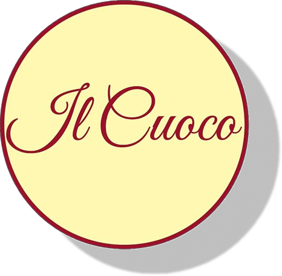

Proyecto
Pepas Artesanales - Il Cuoco
Desarrollo de identidad visual, fotografía de producto y gestión integral de redes sociales. Desde lo estético hasta la producción fotográfica y el manejo de canales digitales, el trabajo buscó consolidar un universo gráfico propio que conecte de forma directa con su audiencia.